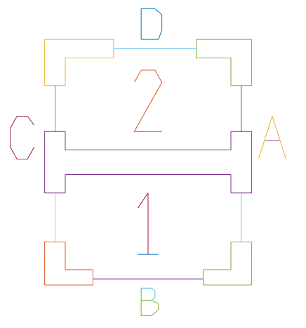
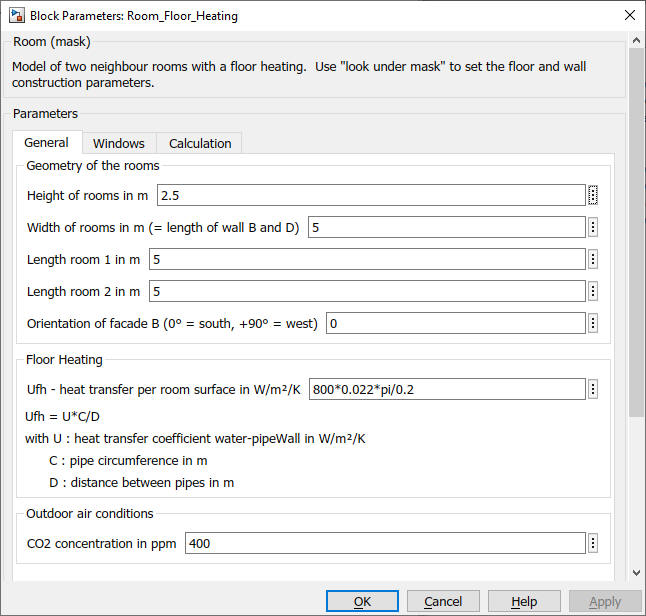
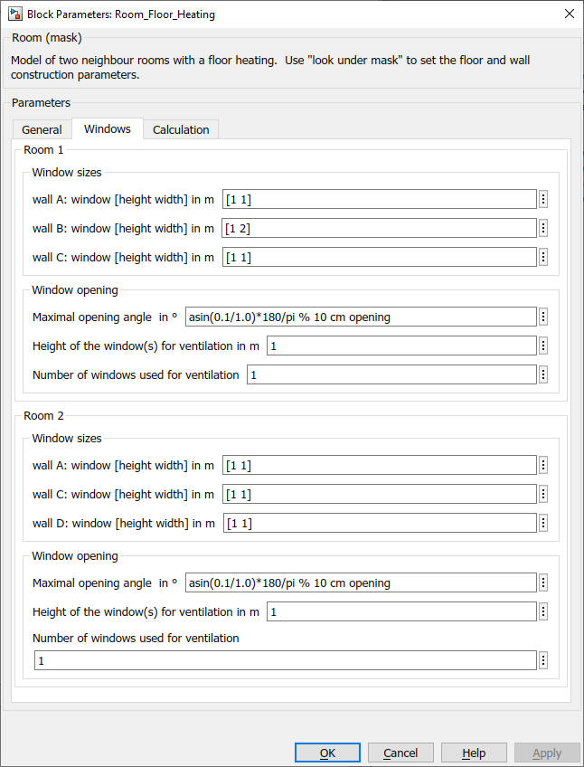
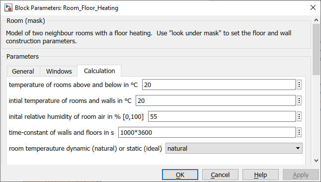

Room_Floor_Heating
Path: CARNOT/Loads/Houses
Purpose:
Model of two rooms, separated by a wall. The rooms may be heated by a floor heating.
Description:
In the model the rooms 1 and 2 are arranged according to the following
construction drawing. The dimensions of the rooms are given by mask
parameters. The width of the rooms (length of wall B and D) has to be the
same for both rooms whereas the length of the rooms (extension of the room
along wall A and C) is individual for each room.
Parameters of the windows are defined for each wall A to D.
In the northern hemisphere the main facade B is typically oriented to the south.
The whole building can be turned by giving an angle between facade B and the
south orientation.

The beneath and above laying room are modelled as "virtual zones" with a fixed temperature.
The room temperature itself can be modeled as :
natural : room temperature is dependant on thermal energy balance
or
ideal : room temperature is fixed to the initial start temperature, the sum of
the thermal power QdotConvection and QdotRadiation is the necessary heating or
cooling power to maintain this temperature
For the description of the components of the Room_Floor_Heating model, see :
Wall_with_Window
Window
Wall_in
Floor_in
Room_Node
THB_P_adapter
Window_ventilation
Ventilation_AIV
The construction parameters of the walls, windows, floor and
ceiling can be given by a mat-file. To create new mat-file use the individual
models Wall_in, Wall_out, Floor_in and Window.
Detailed descriptions of building simulation models have been presented by Ochs: BES Simulation, 2022 and Ochs: Überblick der Aktivitäten an der UIBK, 2013 at the Carnot User Meetings.
Input:
| WDB | : | weather data bus |
| air_exchange_rate | : | air exchange between room air and outdoor air relative to the room volume in 1/h |
| RDB1 | : | Resident Data Bus of room 1, with internal gains, ventilation and shading control |
| RDB2 | : | Resident Data Bus of room 2, with internal gains, ventilation and shading control |
| THBrad1 | : | Thermo-Hydraulic Bus of the flow line to the raditor heating system in room 1 |
| THBrad2 | : | Thermo-Hydraulic Bus of the flow line to the radiator heating system in room 2 |
| THBvent1 | : | Thermo-Hydraulic Bus of an external ventilation system to supply air to room 1 |
| THBvent2 | : | Thermo-Hydraulic Bus of an external ventilation system to supply air to room 2 |
Output:
| Sbus1 | : | Sources-Bus of the building model, room 1 |
| Sbus2 | : | Sources-Bus of the building model, room 2 |
| AIB1 | : | Air Infiltration Bus of the building model, room 1 |
| AIB2 | : | Air Infiltration Bus of the building model, room 2 |
| THB_rad1 | : | Thermo-Hydraulic Bus of the return line to the raditor heating system in room 1 |
| THB_rad2 | : | Thermo-Hydraulic Bus of the retrun line to the radiator heating system in room 2 |
| THB_vent1 | : | Thermo-Hydraulic Bus of the exhaust air of room 1 to the external ventilation system |
| THB_vent2 | : | Thermo-Hydraulic Bus of the exhaust air of room 2 to the external ventilation system |
Parameters and Dialog Box



Examples:
Open the example explorer from the Matlab command window
ExampleBrowser
or load the examples via the CARNOT library.
Validation
Literature:
Wolfgang Feist: Thermische Gebäudesimulation. Kritische Prüfung
unterschiedlicher Modellansätze. Heidelberg, C. F. Müller, 1994.
Balters, E., Lehmann, H., Schaub, A.: SOPASIM - Test weit verbreiteter Solar-Passiv-Simulationssysteme für Architekten, Abschlussbericht, UHL Data, Herzogstr. 27, Aachen, Arbeitsgemeinschaft Solar Nordrhein-Westfalen, 1995
Ochs, Breuss, Jenewein, Magni, Venturi: BES Performance Matlab vs. Simulink,
Carnot User Meeting, Innsbruck, 2022
also available on
https://fh-aachen.sciebo.de/index.php/s/0hxub0iIJrui3ED?path=%2FNutzertreffen%2F2022_Innsbruck
Fabian Ochs: Überblick der Aktivitäten an der UIBK, Carnot User Meeting, Basel/Muttenz, 2013
also available on
https://fh-aachen.sciebo.de/index.php/s/0hxub0iIJrui3ED?path=%2FNutzertreffen%2F2013_Basel
Characteristics:
| Direct Feedthrough | : | Yes |
| Sample Time | : | Inherited from driving block |
| Vectorized | : | No |